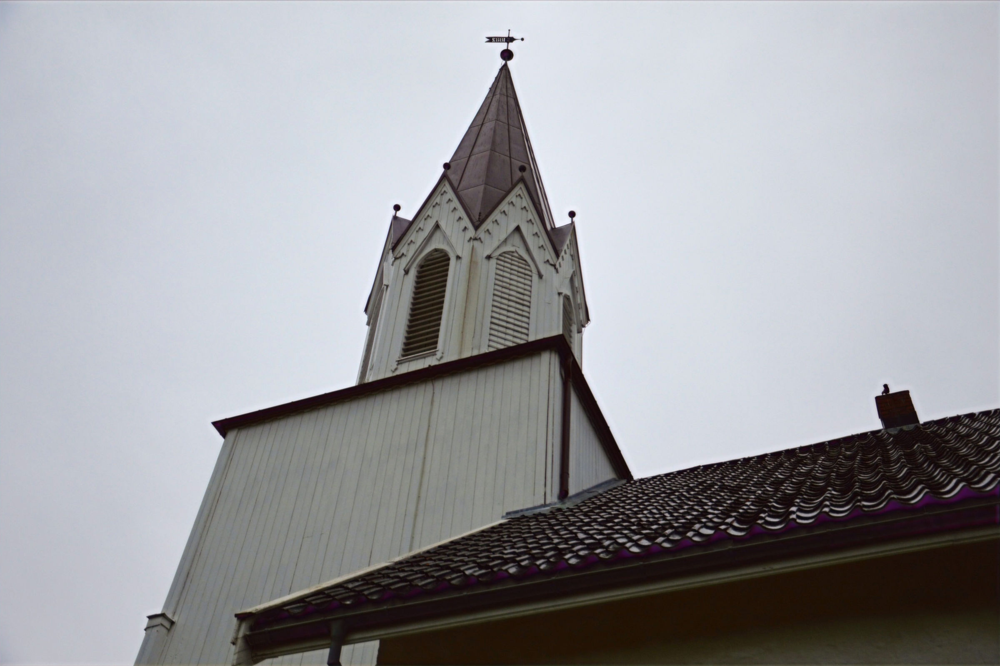
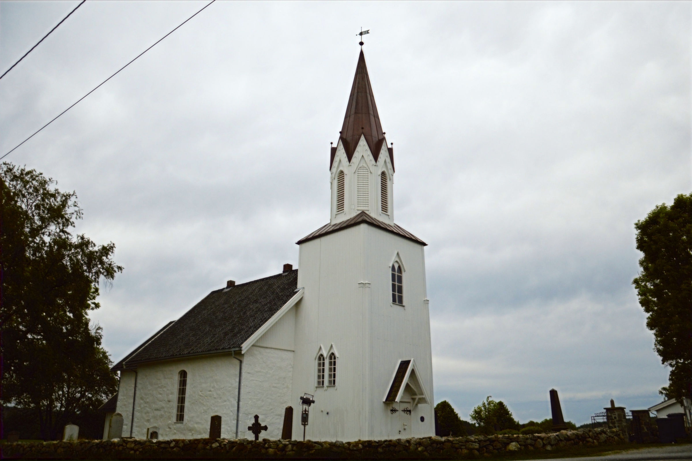
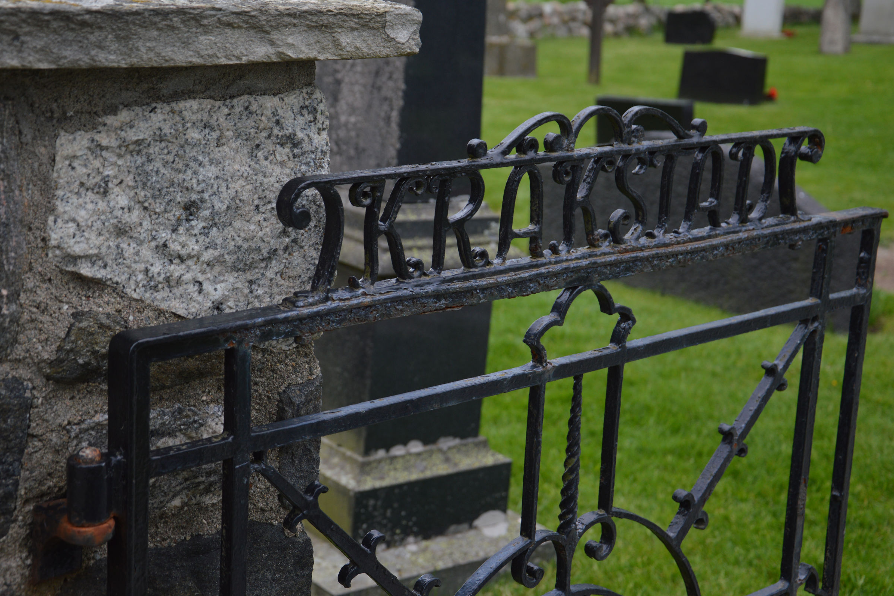

Kråkstad Kirke.
Middelaldersk steinkirke fra 1100-tallet, restaurert etter brannen i 1801 hvor bare fundamentene gjenstod. Vi utbedret klokketårn, fasade i hydratkalk og kompliserte setningsskader.
Middelalder
fra 1100-tallet.
Fredet middelaldersk steinkirke med kvadratisk utforming. Restaurert etter brannen i 1801, hvor bare fundamentene gjenstod.

Steinkirke med
kvadratisk utforming.
Kråkstad kirke ble oppført på midten av 1100-tallet og er en middelaldersk steinkirke med kvadratisk utforming. Kirken ble restaurert etter en brann i 1801, hvor bare fundamentene gjenstod. Kirken har i senere tid vært gjennom flere restaureringsprosjekter.
Hydratkalk
og linolje.
Tradisjonelle materialer på et fredet bygg. Klokketårn og sålbenker i kobber, fasade pusset med hydratkalk, og setningsskader utbedret.

Klokketårn og sålbenker utført i kobber — fasade pusset med hydratkalk.
Vangene på ytre kistevegg innehadde også kompliserte setningsskader som ble utbedret.KNE utførte taktekker-, blikkenslager-, tømrer-, snekker-, murer-, puss- og malerarbeider. Klokketårn og sålbenker ble utført i kobber.
Deler av fasaden ble rehabilitert med puss av hydratkalk og overmalt med kalkmaling. Restaurering av våpenhus og klokketårn i trevirke og dets overflatebehandling. Fasader i trevirke ble utbedret for råteskader og overmalt med linolje.
Vangene på ytre kistevegg innehadde også kompliserte setningsskader som ble utbedret. Strukturelt arbeid på et 800 år gammelt fundament.
- — TårnKlokketårn og sålbenker i kobber.
- — MurHydratkalk-puss og kalkmaling på fasaden.
- — TreLinolje på trevirke; våpenhus og klokketårn restaurert.
- — StrukturSetningsskader i kistevegg utbedret.
Fem fag, på et fredet bygg.
- Maler
- Tømrer og snekker
- Taktekker og blikkenslager
- Mur og puss
- Prosjektstyring
Vil du vite mer om prosjektet?
Vi forteller gjerne om hvordan dette ble løst — og hva vi kan gjøre for ditt bygg.